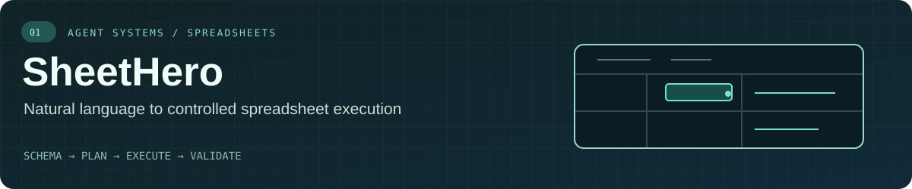
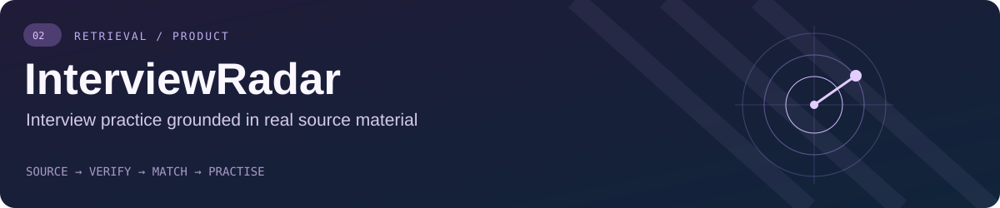

01 / AGENT SYSTEMS
SheetHero ↗
A natural-language spreadsheet system built as a group project. As backend architecture lead, I helped shape staged workflows, schema-grounded execution, and validation around the model.
COMPUTER SCIENCE · UNIVERSITY OF NOTTINGHAM NINGBO CHINA
I'm Kun Chen, a computer science student exploring reliable agent workflows, tool use, and the product decisions that turn promising models into useful software.
01 / ABOUT
My projects began with concrete problems: unreliable spreadsheet agents, generic interview preparation, and everyday food planning. Building them led me to a recurring question: where does an AI system fail after the model has produced an answer?
I work across backend engineering, retrieval, evaluation, and product design. I like clear boundaries between what a model may suggest and what software must verify.
02 / CURRENT RESEARCH
My final-year dissertation investigates how small language models behave on multi-step tool-calling tasks. I am studying execution traces and comparing baseline, fixed-harness, and failure-profile-guided support. The experiments are ongoing.
Follow the work on GitHub ↗Question → evidence → intervention → evaluation
03 / SELECTED WORK
Each project started with a user problem and became a test of how to build more dependable software.

A natural-language spreadsheet system built as a group project. As backend architecture lead, I helped shape staged workflows, schema-grounded execution, and validation around the model.

An open-source interview-preparation workflow built around public source material and resume relevance. Its web prototype extends the idea to staged practice and bounded follow-ups.
Spring Boot backend with asset lifecycle rules, audit logs, statistics and controlled natural-language queries.
Bomberman-inspired C++ / SDL2 game with enemy behaviours, multiple modes, and save support.
04 / EXPERIENCE
Analysed user behaviour and designed agent workflows for a gamified product experience.
Led backend design across iterative versions of a university group project.
Worked on enterprise data processing, database testing and qualification-management workflows.
LET'S CONNECT
I'm interested in conversations about AI systems, research, and practical product ideas.